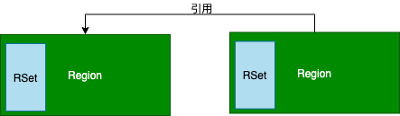

JVM¶
1. ClassFile 结构¶
ClassFile {
u4 magic;
u2 minor_version;
u2 major_version;
u2 constant_pool_count;
cp_info constant_pool[constant_pool_count-1];
u2 access_flags;
u2 this_class;
u2 super_class;
u2 interfaces_count;
u2 interfaces[interfaces_count];
u2 fields_count;
field_info fields[fields_count];
u2 methods_count;
method_info methods[methods_count];
u2 attributes_count;
attribute_info attributes[attributes_count];
}
-
constant_pool
cp_info { u1 tag; u1 info[]; } -
fields
field_info { u2 access_flags; u2 name_index; u2 descriptor_index; u2 attributes_count; attribute_info attributes[attributes_count]; } -
methods
method_info { u2 access_flags; u2 name_index; u2 descriptor_index; u2 attributes_count; attribute_info attributes[attributes_count]; } -
attributes
attribute_info { u2 attribute_name_index; u4 attribute_length; u1 info[attribute_length]; }
2. 类加载-验证-初始化¶

-
Classloadr
public class Launcher { // BootClassPathHolder private static String bootClassPath = System.getProperty("sun.boot.class.path"); // AppClassLoader final String var1 = System.getProperty("java.class.path"); // ExtClassLoader String var0 = System.getProperty("java.ext.dirs"); }
3. JMM¶

**MESI-intel（缓存一致性协议）**
任意一对缓存，对应缓存行的相容关系
cache line¶
|M/E/S/I（2位） | cache line data |
4. 运行数据区¶
- 本地方法栈（Native Method Stack）
- 本地方法通过JNI访问虚拟机运行时的数据区
- 程序计数器（PC）
- 记录程序执行位置
-
虚拟机栈（JVM Stack）
Frame - 方法栈针（main方法）
- 局部向量表（Local Variable Table）
- 操作栈（Operand Stack）
- 动态链接（Dynamic Linking）
- 返回地址（return address）
- 堆区(Heap)
- 对象实例
- 元空间(Metaspace)
- 元数据-class
- 字符常量池1.7 永久代，1.8 堆
5. GC常用算法和收集器¶
- 寻找垃圾
- 引用计算（不能解决循环引用）
- 根可达
- GC Roots
- 虚拟机栈(栈桢中本地变量表)中引用的对象
- 静态变量引用的对象
- 常量引用的对象
- JNI引用的对象
- GC Roots
- GC常用算法
- 标记清除（Mark-Sweep）
- 拷贝（copying）
- 标记压缩（Mark-Compact）
6. 常见垃圾收集器¶
-
Serial 年轻代 串行回收

-
Parallel Scavenge年轻代 并行回收

-
SerialOld
- ParallelOld
- ParNew(Parallel Scavenge增强配合CMS使用)
-
CMS(ConcurrentMarkSweep )

问题
- 内存的碎片化
- 浮动垃圾
- G1

三色标记
- 黑色标记（自己已经标记，fields都标记完成）
- 灰色标记（自己已经标记，fields还没有标记）
- 白色标记（还没有标记完成）
YGC Mixed GC FULL GC
STAB
-
ZGC
-
Shenandoah
默认 PS + ParallelOld
-
默认GC查看
- -XX:+PrintCommandLineFlags -version
- -XX:+PrintGC
- 调优
- 吞吐量：用户程序时间/(用户程序的时间+ 垃圾回收时间)
- 响应时间：垃圾回收时间越短。
7. 常用命令分析¶
-
CUP
-
先执行top ，找到CPU占用比较高的进程
top -
jstack 进程ID
jstack 进程ID >show.txt -
找到经常中cpu占用比较高的线程，线程Id转为16进制
top -Hp 进程ID ## 查看进程中的线程情况 -
通过线程ID查找线程情况
- 内存
-
查看map
jmap -histo pid | head - number -
dump
jmap -dump:format=b,file=/var/logs/heap.hprof pid
-
-
进程参数
jinfo 进程ID -
监控gc信息
jstack -gc 进程ID 毫秒 -
jconsole远程连接
-Djava.rmi.server.hostname=192.160.0.8 #远程服务器ip，即本机ip -Dcom.sun.management.jmxremote #允许JMX远程调用 -Dcom.sun.management.jmxremote.port=5000 #自定义jmx 端口号 -Dcom.sun.management.jmxremote.ssl=false # 是否需要ssl 安全连接方式 -Dcom.sun.management.jmxremote.authenticate=false #是否需要秘钥 #spring boot ENV JAVA_TOOL_OPTIONS "-Dcom.sun.management.jmxremote.ssl=false \ -Dcom.sun.management.jmxremote.authenticate=false \ -Dcom.sun.management.jmxremote.port=5000 \ -Dcom.sun.management.jmxremote.rmi.port=5000 \ -Dcom.sun.management.jmxremote.host=0.0.0.0 \ -Djava.rmi.server.hostname=0.0.0.0"` -
jprofiler(收费)
8. 参数¶
-
GC常用参数
# 年轻代 最小堆 最大堆 栈空间 -Xmn -Xms -Xmx -Xss # 使用TLAB 默认打开 -XX:+UseTLAB # 打印TLAB使用情况 -XX:+PrintTLAB # 设置TLAB大小 -XX:TLABSize # 禁用FGC -XX:+DisableExplictGC # 打印GC信息 -XX:+PrintGC # 打印GC详细信息 -XX:+PrintGCDetails # GC 打印堆栈情况 -XX:+PrintHeapAtGC # 打印JVM参数 -XX:+PrintVMOptions # 初始化的默认值 java -XX:+PrintFlagsFinal +XX:+PrintFlagsInitial # GC 日志文件 -Xloggc:opt/log/gc.log # GC 升级代年龄,最大值15 -XX:MaxTenuringThreshold=15 -
Parallel常用参数
# Survivor(2个)与Eden区的大小比值 2:8 -XX:SurvivorRation=8 -
G1常用参数
-XX:+UseG1GC # 设置G1收集过程目标时间，默认值200ms，不是硬性条件 -XX:MaxGCPauseMillis # 设置Region大小，并非最终值 1M,2M,3M,4M,8M,16M,32M -XX:G1HeapRegionSize=n # 新生代最小值，默认值5% -XX:G1NewSizePercent # 新生代最大值，默认值60% -XX:G1MaxNewSizePercent # STW期间，并行GC线程数 -XX:ParallelGCThreads # 并发标记阶段，并行执行的线程数 -XX:ConcGCThreads=n # 设置触发标记周期的 Java 堆占用率阈值。默认值是45%。这里的java堆占比指的是non_young_capacity_bytes，包括old+humongous -XX:InitiatingHeapOccupancyPercent